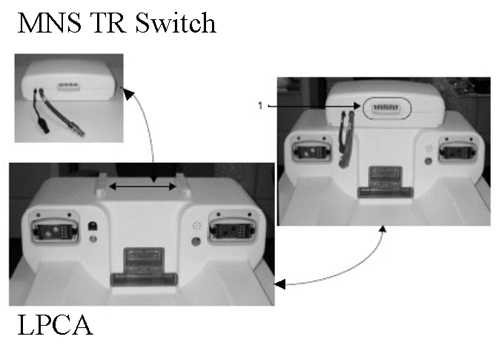
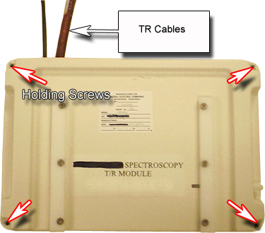
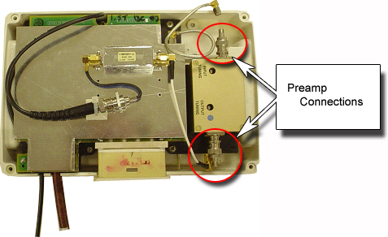

Operating Documentation
Direction 5133330-3, Rev# 14
Signa EXCITE HD 3.0T Service Methods
Module Version 1.0, Version Date 5/3/07
Operating Documentation |
| Required Persons | Preliminary Reqs | Procedure | Finalization |
|---|---|---|---|
| 1 | Not Applicable | 15 mins | Not Applicable |
This procedure applies to 1.5T and 3.0T systems.
| Last Update | 03/10/2005 |
| Item | Qty | Effectivity | Part# | Manufacturer | |
|---|---|---|---|---|---|
| Straight-Edge Screwdriver | 1 | - | - | - | |
| Phillips Screwdriver | 1 | - | - | - | |
| Item | Qty | Effectivity | Part# | Manufacturer | |
|---|---|---|---|---|---|
| 1.5T 13C MNS Preamp | 1 | - | 5114799 | - | |
| 3T 13C MNS Preamp | 1 | - | 5114799-2 | - | |
| ||||
| Strong Magnetic Field! | ||||
| Ferrous materials can become dangerous projectiles in the presence of the magnetic field Produced by the Signa Magnet. | ||||
| Do not Bring any ferromagnetic tools or equipment into the magnet room. |
| ||||
| Possible equipment damage. Verify that power is removed from MNS Amplifier before removing or disconnecting exam room RF components. Verify that the cabinet power is off and power cord is removed before starting work. The MNS amplifier or TR driver could be damaged by operating into improperly terminated loads. | ||||
Turn off the MNS Amplifier and unplug the MNS Amplifier power cord on the rear of MNS Amplifier. Lock out and/or tag out the MNS Amplifier power cord.
Verify that power to the MNS Amplifier is off by checking the fans and LEDs on the MNS Amplifier.
Disconnect the T/R cables from the MNS TR Switch which is located on top of the Low Profile Carriage Assembly (LPCA). See Illustration 1.
Illustration 1: MNS TR Switch and LPCA

Slide off the MNS TR Switch from the carriage tracks.
Remove the four screws holding the top cover to the MNS TR Switch. See Illustration 2.
Illustration 2: Retaining Screw Locations

Remove the cover from the MNS TR Switch.
Disconnect the two cable connections to the preamp. See Illustration 3.
Illustration 3: Disconnect The Cable Connections

Replace the preamp module.
Reconnect the two cable connections.
Put the cover back onto the module and put in the four holding screws.
Slide the MNS TR Switch onto the carriage tracks.
Reconnect the T/R cables.
Plug in the MNS Amplifier power cord and turn on the MNS Amplifier.
Re-configure the system for patients scans.
Do a test scan to ensure system operation.